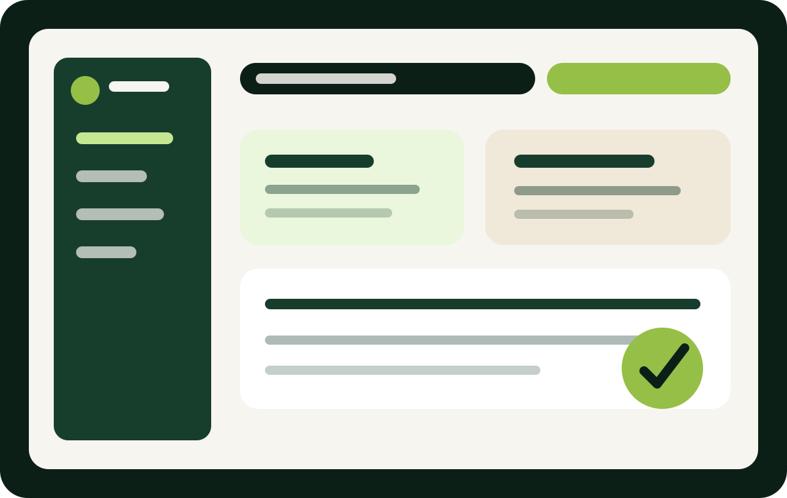
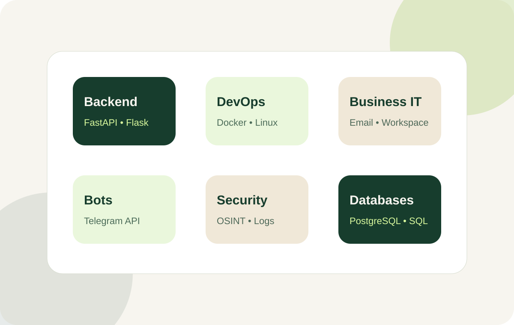

Business Card Websites
Modern personal or business websites with responsive design, sections, contact blocks, portfolio, certificates and QR-ready links.
- GitHub Pages static sites
- Landing pages and portfolios
- Clean business presentation
I create business websites, Telegram bots, backend APIs, client dashboards, simple CRM/HelpDesk systems, corporate email setups and Linux/Docker-based project environments.

What I can do
I focus on practical systems that small businesses can understand and use: a clear website, corporate email, Google Workspace structure, request automation, client area, admin panel and technical support workflow.
Explore all servicesServices
These are the exact areas I can present on a business card, portfolio and client offer.
Modern personal or business websites with responsive design, sections, contact blocks, portfolio, certificates and QR-ready links.
Setup of company email structure, mailboxes, aliases, basic DNS records and user onboarding.
Google Workspace configuration for small teams: users, groups, shared Drive, access structure and basic security.
Telegram bots for support, requests, notifications, forms, knowledge base search and admin workflows.
Simple systems for collecting, tracking and managing customer requests, internal tasks and support tickets.
Login, registration, personal cabinet, user roles, secure password hashing and admin area foundations.
Small CRM or HelpDesk platforms with users, tickets, knowledge base, admin dashboard and basic reporting.
Docker and Docker Compose setup for Python apps, backend services, databases and local development environments.
Basic Linux server preparation, terminal work, services, project deployment and environment configuration.
Defensive security mindset: password hashing, access control, logs, security headers, OSINT and safe diagnostics.
Python backend APIs with FastAPI or Flask, database models, validation, Swagger docs and clean architecture.
GitHub profile, project README, GitHub Pages portfolio, certificates and project presentation for career growth.
Knowledge stack
The strongest part of this profile is the combination: coding, infrastructure, small business IT, automation and support workflows.

Projects
Real hands-on work: backend systems, Telegram automation, DevOps infrastructure, Linux learning and business platform foundations.
A local SaaS-style platform foundation for small business digital office services. Includes FastAPI backend, PostgreSQL, registration, login, client dashboard, admin area, client/admin roles, secure password hashing, cookie sessions and Docker Compose setup.
Telegram support automation system with FastAPI backend, admin dashboard, knowledge base search, SQLite database, support tickets, Docker setup, tests and GitHub Actions CI.
Corporate-style infrastructure lab using Flask, PostgreSQL 16, Nginx, Docker Compose, Kubernetes, Terraform, Ansible, GitHub Actions, Prometheus and Grafana.
Defensive Python toolkit for networking diagnostics, log analysis, IOC extraction, hashing, password checks, subnet calculations, reports and AI investigation prompts.
Responsive Flask web app with tabs, API endpoint, notes saved to JSON, feedback form, Docker and Nginx support.
Mini DevOps project with Flask, Redis, Nginx, Gunicorn and Docker Compose. Demonstrates multi-service architecture and reverse proxy basics.
Static professional website for presenting skills, services, projects, certificates and contact details using GitHub Pages.
Contact
I can help with a website, bot, corporate email, Google Workspace structure, dashboard or Docker/Linux project setup.